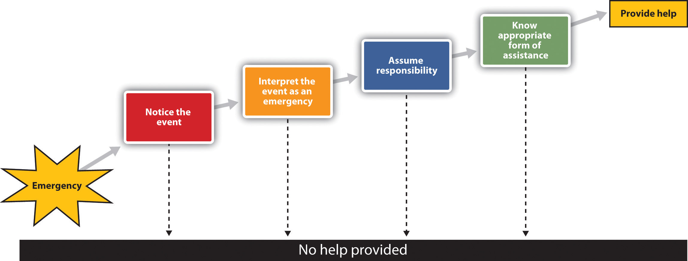
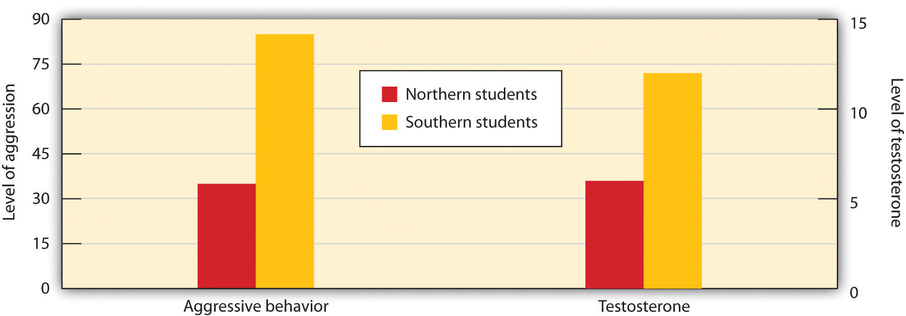
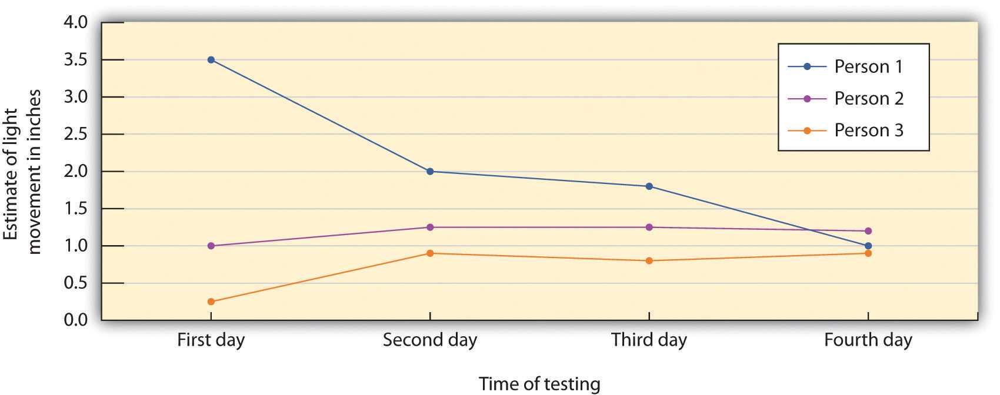
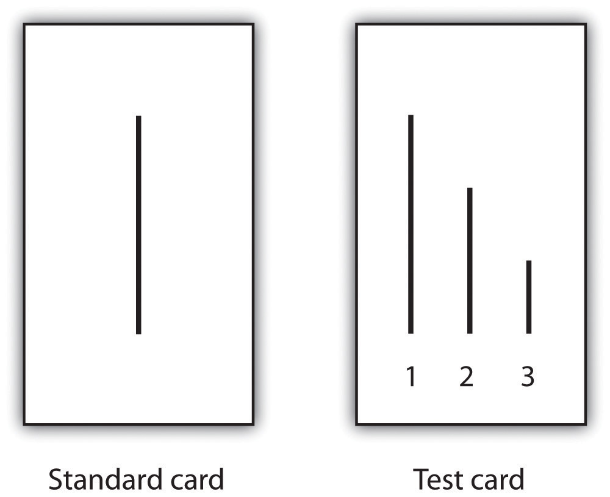
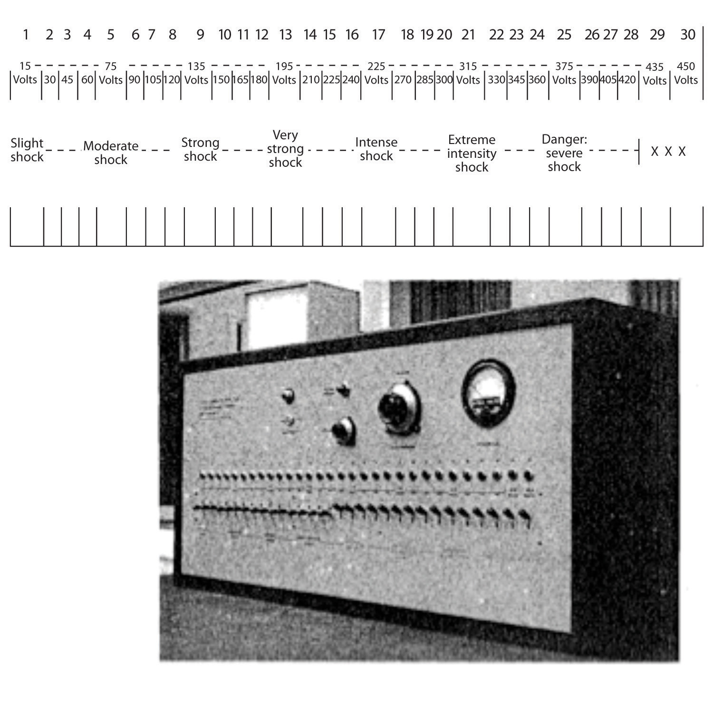

Humans have developed a variety of social skills that enhance our ability to successfully interact with others. We are often helpful, even when that helping comes at some cost to ourselves, and we often change our opinions and beliefs to fit in with the opinions of those whom we care about. Yet we also are able to be aggressive if we feel the situation warrants it.
AltruismAny behavior that is designed to increase another person’s welfare, and particularly those actions that do not seem to provide a direct reward to the person who performs them. refers to any behavior that is designed to increase another person’s welfare, and particularly those actions that do not seem to provide a direct reward to the person who performs them (Dovidio, Piliavin, Schroeder, & Penner, 2006).Dovidio, J. F., Piliavin, J. A., Schroeder, D. A., & Penner, L. (2006). The social psychology of prosocial behavior. Mahwah, NJ: Lawrence Erlbaum Associates. Altruism occurs when we stop to help a stranger who has been stranded on the highway, when we volunteer at a homeless shelter, or when we donate to a charity. According to a survey given by an established coalition that studies and encourages volunteering (http://www.independentsector.org), in 2001 over 83 million American adults reported that they helped others by volunteering, and did so an average of 3.6 hours per week. The survey estimated that the value of the volunteer time that was given was over 239 billion dollars.
Because altruism is costly, you might wonder why we engage in it at all. There are a variety of explanations for the occurrence of altruism, and Table 14.3 "Some of the Variables Known to Increase Helping" summarizes some of the variables that are known to increase helping.
Table 14.3 Some of the Variables Known to Increase Helping
| Positive moods | We help more when we are in a good mood (Guéguen & De Gail, 2003). |
| Similarity | We help people who we see as similar to us, for instance, those who mimic our behaviors (van Baaren, Holland, Kawakami, & van Knippenberg, 2004). |
| Guilt | If we are experiencing guilt, we may help relieve those negative feelings. |
| Empathy | We help more when we feel empathy for the other person (Batson, O’Quin, Fultz, Varnderplas, & Isen, 1983). |
| Benefits | We are more likely to help if we can feel good about ourselves by doing so (Snyder, Omoto, & Lindsay, 2004). |
| Personal responsibility | We are more likely to help if it is clear that others are not helping. |
| Self-presentation | We may help in order to show others that we are good people (Hardy & Van Vugt, 2006). |
Sources: Guéguen, N., & De Gail, M.-A. (2003). The effect of smiling on helping behavior: Smiling and Good Samaritan behavior. Communication Reports, 16(2), 133–140; van Baaren, R. B., Holland, R. W., Kawakami, K., & van Knippenberg, A. (2004). Mimicry and prosocial behavior. Psychological Science, 15(1), 71–74; Batson, C. D., O’Quin, K., Fultz, J., Varnderplas, M., & Isen, A. M. (1983). Influence of self-reported distress and empathy on egoistic versus altruistic motivation to help. Journal of Personality and Social Psychology, 45(3), 706–718; Snyder, M., Omoto, A. M., & Lindsay, J. J. (Eds.). (2004). Sacrificing time and effort for the good of others: The benefits and costs of volunteerism. New York, NY: Guilford Press; Hardy, C. L., & Van Vugt, M. (2006). Nice guys finish first: The competitive altruism hypothesis. Personality and Social Psychology Bulletin, 32(10), 1402–1413.
The tendency to help others in need is in part a functional evolutionary adaptation. Although helping others can be costly to us as individuals, helping people who are related to us can perpetuate our own genes (Madsen et al., 2007; McAndrew, 2002; Stewart-Williams, 2007).Madsen, E. A., Tunney, R. J., Fieldman, G., Plotkin, H. C., Dunbar, R. I. M., Richardson, J.-M.,…McFarland, D. (2007). Kinship and altruism: A cross-cultural experimental study. British Journal of Psychology, 98(2), 339–359; McAndrew, F. T. (2002). New evolutionary perspectives on altruism: Multilevel-selection and costly-signaling theories. Current Directions in Psychological Science, 11(2), 79–82; Stewart-Williams, S. (2007). Altruism among kin vs. nonkin: Effects of cost of help and reciprocal exchange. Evolution and Human Behavior, 28(3), 193–198. Burnstein, Crandall, and Kitayama (1994)Burnstein, E., Crandall, C., & Kitayama, S. (1994). Some neo-Darwinian decision rules for altruism: Weighing cues for inclusive fitness as a function of the biological importance of the decision. Journal of Personality and Social Psychology, 67(5), 773–789. found that students indicated they would be more likely to help a person who was closely related to them (e.g., a sibling, parent, or child) than they would be to help a person who was more distantly related (e.g., a niece, nephew, uncle, or grandmother). People are more likely to donate kidneys to relatives than to strangers (Borgida, Conner, & Manteufel, 1992),Borgida, E., Conner, C., & Manteufel, L. (Eds.). (1992). Understanding living kidney donation: A behavioral decision-making perspective. Thousand Oaks, CA: Sage. and even children indicate that they are more likely to help their siblings than they are to help a friend (Tisak & Tisak, 1996).Tisak, M. S., & Tisak, J. (1996). My sibling’s but not my friend’s keeper: Reasoning about responses to aggressive acts. Journal of Early Adolescence, 16(3), 324–339.
Although it makes evolutionary sense that we would help people who we are related to, why would we help people to whom we not related? One explanation for such behavior is based on the principle of reciprocal altruism (Krebs & Davies, 1987; Trivers, 1971).Krebs, J. R., & Davies, N. B. (1987). An introduction to behavioural ecology (2nd ed.). Sunderland, MA: Sinauer Associates; Trivers, R. L. (1971). The evolution of reciprocal altruism. Quarterly Review of Biology, 46, 35–57. Reciprocal altruismThe principle that, if we help other people now, those others will return the favor should we need their help in the future. is the principle that, if we help other people now, those others will return the favor should we need their help in the future. By helping others, we both increase our chances of survival and reproductive success and help others increase their survival too. Over the course of evolution, those who engage in reciprocal altruism should be able to reproduce more often than those who do not, thus enabling this kind of altruism to continue.
We also learn to help by modeling the helpful behavior of others. Although people frequently worry about the negative impact of the violence that is seen on TV, there is also a great deal of helping behavior shown on television. Smith et al. (2006)Smith, S. W., Smith, S. L., Pieper, K. M., Yoo, J. H., Ferris, A. L., Downs, E.,…Bowden, B. (2006). Altruism on American television: Examining the amount of, and context surrounding, acts of helping and sharing. Journal of Communication, 56(4), 707–727. found that 73% of TV shows had some altruism, and that about three altruistic behaviors were shown every hour. Furthermore, the prevalence of altruism was particularly high in children’s shows. But just as viewing altruism can increase helping, modeling of behavior that is not altruistic can decrease altruism. For instance, Anderson and Bushman (2001)Anderson, C. A., & Bushman, B. J. (2001). Effects of violent video games on aggressive behavior, aggressive cognition, aggressive affect, physiological arousal, and prosocial behavior: A meta-analytic review of the scientific literature. Psychological Science, 12(5), 353–359. found that playing violent video games led to a decrease in helping.
We are more likely to help when we receive rewards for doing so and less likely to help when helping is costly. Parents praise their children who share their toys with others, and may reprimand children who are selfish. We are more likely to help when we have plenty of time than when we are in a hurry (Darley and Batson 1973).Darley, J. M., & Batson, C. D. (1973). “From Jerusalem to Jericho”: A study of situational and dispositional variables in helping behavior. Journal of Personality and Social Psychology, 27(1), 100–108. Another potential reward is the status we gain as a result of helping. When we act altruistically, we gain a reputation as a person with high status who is able and willing to help others, and this status makes us more desirable in the eyes of others (Hardy & Van Vugt, 2006).Hardy, C. L., & Van Vugt, M. (2006). Nice guys finish first: The competitive altruism hypothesis. Personality and Social Psychology Bulletin, 32(10), 1402–1413.
The outcome of the reinforcement and modeling of altruism is the development of social norms about helping—standards of behavior that we see as appropriate and desirable regarding helping. The reciprocity norm reminds us that we should follow the principles of reciprocal altruism. If someone helps us, then we should help them in the future, and we should help people now with the expectation that they will help us later if we need it. The reciprocity norm is found in everyday adages such as “Scratch my back and I’ll scratch yours” and in religious and philosophical teachings such as the “Golden Rule”: “Do unto other as you would have them do unto you.”
Because helping based on the reciprocity norm is based on the return of earlier help and the expectation of a future return from others, it might not seem like true altruism. We might hope that our children internalize another relevant social norm that seems more altruistic: the social responsibility norm. The social responsibility norm tells us that we should try to help others who need assistance, even without any expectation of future paybacks. The teachings of many religions are based on the social responsibility norm; that we should, as good human beings, reach out and help other people whenever we can.
Late at night on March 13, 1964, 28-year-old Kitty Genovese was murdered within a few yards of her apartment building in New York City after a violent fight with her killer in which she struggled and screamed. When the police interviewed Kitty’s neighbors about the crime, they discovered that 38 of the neighbors indicated that they had seen or heard the fight occurring but not one of them had bothered to intervene, and only one person had called the police.
Was Kitty Genovese murdered because there were too many people who heard her cries? Watch this video for an analysis.
Two social psychologists, Bibb Latané and John Darley, were interested in the factors that influenced people to help (or to not help) in such situations (Latané & Darley, 1968).Latané, B., & Darley, J. M. (1968). Group inhibition of bystander intervention in emergencies. Journal of Personality and Social Psychology, 10(3), 215–221. They developed a model (see Figure 14.9) that took into consideration the important role of the social situation in determining helping. The model has been extensively tested in many studies, and there is substantial support for it. Social psychologists have discovered that it was the 38 people themselves that contributed to the tragedy, because people are less likely to notice, interpret, and respond to the needs of others when they are with others than they are when they are alone.
Figure 14.9
The Latané and Darley model of helping is based on the idea that a variety of situational factors can influence whether or not we help.
The first step in the model is noticing the event. Latané and Darley (1968)Latané, B., & Darley, J. M. (1968). Group inhibition of bystander intervention in emergencies. Journal of Personality and Social Psychology, 10(3), 215–221. demonstrated the important role of the social situation in noticing by asking research participants to complete a questionnaire in a small room. Some of the participants completed the questionnaire alone, whereas others completed the questionnaire in small groups in which two other participants were also working on questionnaires. A few minutes after the participants had begun the questionnaires, the experimenters started to let some white smoke come into the room through a vent in the wall. The experimenters timed how long it took before the first person in the room looked up and noticed the smoke.
The people who were working alone noticed the smoke in about 5 seconds, and within 4 minutes most of the participants who were working alone had taken some action. On the other hand, on average, the first person in the group conditions did not notice the smoke until over 20 seconds had elapsed. And, although 75% of the participants who were working alone reported the smoke within 4 minutes, the smoke was reported in only 12% of the groups by that time. In fact, in only 3 of the 8 groups did anyone report the smoke, even after it had filled the room. You can see that the social situation has a powerful influence on noticing; we simply don’t see emergencies when other people are with us.
Even if we notice an emergency, we might not interpret it as one. Were the cries of Kitty Genovese really calls for help, or were they simply an argument with a boyfriend? The problem is compounded when others are present, because when we are unsure how to interpret events we normally look to others to help us understand them, and at the same time they are looking to us for information. The problem is that each bystander thinks that other people aren’t acting because they don’t see an emergency. Believing that the others know something that they don’t, each observer concludes that help is not required.
Even if we have noticed the emergency and interpret it as being one, this does not necessarily mean that we will come to the rescue of the other person. We still need to decide that it is our responsibility to do something. The problem is that when we see others around, it is easy to assume that they are going to do something, and that we don’t need to do anything ourselves. Diffusion of responsibilityThe assumption that others will take action and therefore we do not take action ourselves. occurs when we assume that others will take action and therefore we do not take action ourselves. The irony again, of course, is that people are more likely to help when they are the only ones in the situation than when there are others around.
Perhaps you have noticed diffusion of responsibility if you participated in an Internet users group where people asked questions of the other users. Did you find that it was easier to get help if you directed your request to a smaller set of users than when you directed it to a larger number of people? Markey (2000)Markey, P. M. (2000). Bystander intervention in computer-mediated communication. Computers in Human Behavior, 16(2), 183–188. found that people received help more quickly (in about 37 seconds) when they asked for help by specifying a participant’s name than when no name was specified (51 seconds).
The final step in the helping model is knowing how to help. Of course, for many of us the ways to best help another person in an emergency are not that clear; we are not professionals and we have little training in how to help in emergencies. People who do have training in how to act in emergencies are more likely to help, whereas the rest of us just don’t know what to do, and therefore we may simply walk by. On the other hand, today many people have cell phones, and we can do a lot with a quick call; in fact, a phone call made in time might have saved Kitty Genovese’s life.
AggressionBehavior intended to harm another individual. is behavior that is intended to harm another individual. Aggression may occur in the heat of the moment, for instance, when a jealous lover strikes out in rage or the sports fans at a university light fires and destroy cars after an important basketball game. Or it may occur in a more cognitive, deliberate, and planned way, such as the aggression of a bully who steals another child’s toys, a terrorist who kills civilians to gain political exposure, or a hired assassin who kills for money.
Not all aggression is physical. Aggression also occurs in nonphysical ways, as when children exclude others from activities, call them names, or spread rumors about them. Paquette and Underwood (1999)Paquette, J. A., & Underwood, M. K. (1999). Gender differences in young adolescents’ experiences of peer victimization: Social and physical aggression. Merrill-Palmer Quarterly, 45(2), 242–266. found that both boys and girls rated nonphysical aggression such as name-calling as making them feel more “sad and bad” than did physical aggression.
We may aggress against others in part because it allows us to gain access to valuable resources such as food, territory, and desirable mates, or to protect ourselves from direct attack by others. If aggression helps in the survival of our genes, then the process of natural selection may well have caused humans, as it would any other animal, to be aggressive (Buss & Duntley, 2006).Buss, D. M., & Duntley, J. D. (Eds.). (2006). The Evolution of Aggression. Madison, CT: Psychosocial Press.
There is evidence for the genetics of aggression. Aggression is controlled in large part by the amygdala. One of the primary functions of the amygdala is to help us learn to associate stimuli with the rewards and the punishment that they may provide. The amygdala is particularly activated in our responses to stimuli that we see as threatening and fear-arousing. When the amygdala is stimulated, in either humans or in animals, the organism becomes more aggressive.
But just because we can aggress does not mean that we will aggress. It is not necessarily evolutionarily adaptive to aggress in all situations. Neither people nor animals are always aggressive; they rely on aggression only when they feel that they absolutely need to (Berkowitz, 1993).Berkowitz, L. (1993). Aggression: Its causes, consequences and control. New York, NY: McGraw-Hill. The prefrontal cortex serves as a control center on aggression; when it is more highly activated, we are more able to control our aggressive impulses. Research has found that the cerebral cortex is less active in murderers and death row inmates, suggesting that violent crime may be caused at least in part by a failure or reduced ability to regulate aggression (Davidson, Putnam, & Larson, 2000).Davidson, R. J., Putnam, K. M., & Larson, C. L. (2000). Dysfunction in the neural circuitry of emotion regulation—A possible prelude to violence. Science, 289(5479), 591–594.
Hormones are also important in regulating aggression. Most important in this regard is the male sex hormone testosterone, which is associated with increased aggression in both males and females. Research conducted on a variety of animals has found a positive correlation between levels of testosterone and aggression. This relationship seems to be weaker among humans than among animals, yet it is still significant (Dabbs, Hargrove, & Heusel, 1996).Dabbs, J. M. Jr., Hargrove, M. F., & Heusel, C. (1996). Testosterone differences among college fraternities: Well-behaved vs. rambunctious. Personality and Individual Differences, 20(2), 157–161.
Consuming alcohol increases the likelihood that people will respond aggressively to provocations, and even people who are not normally aggressive may react with aggression when they are intoxicated (Graham, Osgood, Wells, & Stockwell, 2006).Graham, K., Osgood, D. W., Wells, S., & Stockwell, T. (2006). To what extent is intoxication associated with aggression in bars? A multilevel analysis. Journal of Studies on Alcohol, 67(3), 382–390. Alcohol reduces the ability of people who have consumed it to inhibit their aggression because when people are intoxicated, they become more self-focused and less aware of the social constraints that normally prevent them from engaging aggressively (Bushman & Cooper, 1990; Steele & Southwick, 1985).Bushman, B. J., & Cooper, H. M. (1990). Effects of alcohol on human aggression: An integrative research review. Psychological Bulletin, 107(3), 341–354; Steele, C. M., & Southwick, L. (1985). Alcohol and social behavior: I. The psychology of drunken excess. Journal of Personality and Social Psychology, 48(1), 18–34.
If I were to ask you about the times that you have been aggressive, I bet that you would tell me that many of them occurred when you were angry, in a bad mood, tired, in pain, sick, or frustrated. And you would be right—we are much more likely to aggress when we are experiencing negative emotions. One important determinant of aggression is frustration. When we are frustrated we may lash out at others, even at people who did not cause the frustration. In some cases the aggression is displaced aggression, which is aggression that is directed at an object or person other than the person who caused the frustration.
Other negative emotions also increase aggression. Griffit and Veitch (1971)Griffit, W., & Veitch, R. (1971). Hot and crowded: Influence of population density and temperature on interpersonal affective behavior. Journal of Personality and Social Psychology, 17(1), 92–98. had students complete questionnaires in rooms in which the heat was at a normal temperature or in which the temperature was over 90 degrees Fahrenheit. The students in the latter conditions expressed significantly more hostility. Aggression is greater on hot days than it is on cooler days and during hot years than during cooler years, and most violent riots occur during the hottest days of the year (Bushman, Wang, & Anderson, 2005).Bushman, B. J., Wang, M. C., & Anderson, C. A. (2005). Is the curve relating temperature to aggression linear or curvilinear? Assaults and temperature in Minneapolis reexamined. Journal of Personality and Social Psychology, 89(1), 62–66. Pain also increases aggression (Berkowitz, 1993).Berkowitz, L. (1993). Pain and aggression: Some findings and implications. Motivation and Emotion, 17(3), 277–293.
If we are aware that we are feeling negative emotions, we might think that we could release those emotions in a relatively harmless way, such as by punching a pillow or kicking something, with the hopes that doing so will release our aggressive tendencies. CatharsisThe idea that observing or engaging in less harmful aggressive actions will reduce the tendency to aggress later in a more harmful way.—the idea that observing or engaging in less harmful aggressive actions will reduce the tendency to aggress later in a more harmful way—has been considered by many as a way of decreasing violence, and it was an important part of the theories of Sigmund Freud.
As far as social psychologists have been able to determine, however, catharsis simply does not work. Rather than decreasing aggression, engaging in aggressive behaviors of any type increases the likelihood of later aggression. Bushman, Baumeister, and Stack (1999)Bushman, B. J., Baumeister, R. F., & Stack, A. D. (1999). Catharsis, aggression, and persuasive influence: Self-fulfilling or self-defeating prophecies? Journal of Personality and Social Psychology, 76(3), 367–376. first angered their research participants by having another student insult them. Then half of the participants were allowed to engage in a cathartic behavior: They were given boxing gloves and then got a chance to hit a punching bag for 2 minutes. Then all the participants played a game with the person who had insulted them earlier in which they had a chance to blast the other person with a painful blast of white noise. Contrary to the catharsis hypothesis, the students who had punched the punching bag set a higher noise level and delivered longer bursts of noise than the participants who did not get a chance to hit the punching bag. It seems that if we hit a punching bag, punch a pillow, or scream as loud as we can to release our frustration, the opposite may occur—rather than decreasing aggression, these behaviors in fact increase it.
The average American watches over 4 hours of television every day, and these programs contain a substantial amount of aggression. At the same time, children are also exposed to violence in movies and video games, as well as in popular music and music videos that include violent lyrics and imagery. Research evidence makes it very clear that, on average, people who watch violent behavior become more aggressive. The evidence supporting this relationship comes from many studies conducted over many years using both correlational designs as well as laboratory studies in which people have been randomly assigned to view either violent or nonviolent material (Anderson et al., 2003).Anderson, C. A., Berkowitz, L., Donnerstein, E., Huesmann, L. R., Johnson, J. D., Linz, D.,…Wartella, E. (2003). The influence of media violence on youth. Psychological Science in the Public Interest, 4(3), 81–110. Viewing violent behavior also increases aggression in part through observational learning. Children who witness violence are more likely to be aggressive. One example is in the studies of Albert Bandura, as shown in below.
This video shows Professor Albert Bandura describing his studies on the observational learning of aggression in children.
Another outcome of viewing large amounts of violent material is desensitizationThe tendency over time to show weaker emotional responses to emotional stimuli., which is the tendency over time to show weaker emotional responses to emotional stimuli. When we first see violence, we are likely to be shocked, aroused, and even repulsed by it. However, over time, as we see more and more violence, we become habituated to it, such that the subsequent exposures produce fewer and fewer negative emotional responses. Continually viewing violence also makes us more distrustful and more likely to behave aggressively (Bartholow, Bushman, & Sestir, 2006; Nabi & Sullivan, 2001).Bartholow, B. D., Bushman, B. J., & Sestir, M. A. (2006). Chronic violent video game exposure and desensitization to violence: Behavioral and event-related brain potential data. Journal of Experimental Social Psychology, 42(4), 532–539; Nabi, R. L., & Sullivan, J. L. (2001). Does television viewing relate to engagement in protective action against crime? A cultivation analysis from a theory of reasoned action perspective. Communication Research, 28(6), 802–825.
Of course, not everyone who views violent material becomes aggressive; individual differences also matter. People who experience a lot of negative affect and who feel that they are frequently rejected by others whom they care about are more aggressive (Downey, Irwin, Ramsay, & Ayduk, 2004).Downey, G., Irwin, L., Ramsay, M., & Ayduk, O. (Eds.). (2004). Rejection sensitivity and girls’ aggression. New York, NY: Kluwer Academic/Plenum Publishers. People with inflated or unstable self-esteem are more prone to anger and are highly aggressive when their high self-image is threatened (Baumeister, Smart, & Boden, 1996).Baumeister, R. F., Smart, L., & Boden, J. M. (1996). Relation of threatened egotism to violence and aggression: The dark side of high self-esteem. Psychological Review, 103(1), 5–33. For instance, classroom bullies are those children who always want to be the center of attention, who think a lot of themselves, and who cannot take criticism (Salmivalli & Nieminen, 2002).Salmivalli, C., & Nieminen, E. (2002). Proactive and reactive aggression among school bullies, victims, and bully-victims. Aggressive Behavior, 28(1), 30–44. Bullies are highly motivated to protect their inflated self-concepts, and they react with anger and aggression when it is threatened.
There is a culturally universal tendency for men to be more physically violent than women (Archer & Coyne, 2005; Crick & Nelson, 2002).Archer, J., & Coyne, S. M. (2005). An integrated review of indirect, relational, and social aggression. Personality and Social Psychology Review, 9(3), 212–230; Crick, N. R., & Nelson, D. A. (2002). Relational and physical victimization within friendships: Nobody told me there’d be friends like these. Journal of Abnormal Child Psychology, 30(6), 599–607. Worldwide, about 99% of rapes and about 90% of robberies, assaults, and murders are committed by men (Graham & Wells, 2001).Graham, K., & Wells, S. (2001). The two worlds of aggression for men and women. Sex Roles, 45(9–10), 595–622. These sex differences do not imply that women are never aggressive. Both men and women respond to insults and provocation with aggression; the differences between men and women are smaller after they have been frustrated, insulted, or threatened (Bettencourt & Miller, 1996).Bettencourt, B., & Miller, N. (1996). Gender differences in aggression as a function of provocation: A meta-analysis. Psychological Bulletin, 119, 422–447.
In addition to differences across cultures, there are also regional differences in the incidence of violence in different parts of the United States. As one example, the homicide rate is significantly higher in the southern and the western states but lower in the eastern and northern states. One explanation for these differences is variation in cultural norms about the appropriate reactions to threats against one’s social status. These cultural differences apply primarily to men. In short, some men react more violently than others when they believe that others are threatening them.
The social norm that condones and even encourages responding to insults with aggression is known as the culture of honorA social norm that condones and even encourages responding to insults with aggression.. The culture of honor leads people to view even relatively minor conflicts or disputes as challenges to one’s social status and reputation and can therefore trigger aggressive responses. Beliefs in culture of honor norms are stronger among men who live or who were raised in the South and West than among men who are from or living in the North and East.
In one series of experiments, Cohen, Nisbett, Bosdle, and Schwarz (1996)Cohen, D., Nisbett, R. E., Bosdle, B., & Schwarz, N. (1996). Insult, aggression, and the southern culture of honor: An “experimental ethnography.” Journal of Personality and Social Psychology, 70, 945–960. investigated how white male students who had grown up either in the northern or in the southern regions of the United States responded to insults. The experiments, which were conducted at the University of Michigan, involved an encounter in which the research participant was walking down a narrow hallway. The experimenters enlisted the help of a confederate who did not give way to the participant but rather bumped into him and insulted him. Compared with Northerners, students from the South who had been bumped were more likely to think that their masculine reputations had been threatened, exhibited greater physiological signs of being upset, had higher testosterone levels, engaged in more aggressive and dominant behavior (gave firmer handshakes), and were less willing to yield to a subsequent confederate (Figure 14.10 "Results From Cohen, Nisbett, Bosdle, and Schwarz, 1996").
Figure 14.10 Results From Cohen, Nisbett, Bosdle, and Schwarz, 1996
Students from southern U.S. states expressed more anger and had greater levels of testosterone after being insulted than did students from northern states.
Source: Adapted from Cohen, D., Nisbett, R. E., Bosdle, B., & Schwarz, N. (1996). Insult, aggression, and the southern culture of honor: An “experimental ethnography.” Journal of Personality and Social Psychology, 70, 945–960.
In another test of the impact of culture of honor, Cohen and Nisbett (1997)Cohen, D., & Nisbett, R. E. (1997). Field experiments examining the culture of honor: The role of institutions in perpetuating norms about violence. Personality and Social Psychology Bulletin, 23(11), 1188–1199. sent letters to employers across the United States from a fictitious job applicant who admitted having been convicted of a felony. To half the employers, the applicant reported that he had impulsively killed a man who had been having an affair with his fiancée and then taunted him about it in a crowded bar. To the other half, the applicant reported that he had stolen a car because he needed the money to pay off debts. Employers from the South and the West, places in which the culture of honor is strong, were more likely than employers in the North and East to respond in an understanding and cooperative way to the letter from the convicted killer, but there were no cultural differences for the letter from the auto thief.
One possible explanation for regional differences in the culture of honor involves the kind of activities typically engaged in by men in the different regions. While people in the northern parts of the United States were usually farmers who grew crops, people from southern climates were more likely to raise livestock. Unlike the crops grown by the northerners, the herds were mobile and vulnerable to theft, and it was difficult for law enforcement officials to protect them. To be successful in an environment where theft was common, a man had to build a reputation for strength and toughness, and this was accomplished by a willingness to use swift, and sometimes violent, punishment against thieves.
When we decide on what courses to enroll in by asking for advice from our friends, change our beliefs or behaviors as a result of the ideas that we hear from others, or binge drink because our friends are doing it, we are engaging in conformityA change in beliefs or behavior that occurs as the result of the presence of the other people around us., a change in beliefs or behavior that occurs as the result of the presence of the other people around us. We conform not only because we believe that other people have accurate information and we want to have knowledge (informational conformity) but also because we want to be liked by others (normative conformity).
The typical outcome of conformity is that our beliefs and behaviors become more similar to those of others around us. But some situations create more conformity than others, and some of the factors that contribute to conformity are shown in Table 14.4 "Variables That Increase Conformity".
Table 14.4 Variables That Increase Conformity
| Variable | Description | Example |
|---|---|---|
| Number in majority | As the number of people who are engaging in a behavior increases, the tendency to conform to those people also increases. | People are more likely to stop and look up in the air when many, rather than few, people are also looking up (Milgram, Bickman, & Berkowitz, 1969). |
| Unanimity | Conformity reduces sharply when any one person deviates from the norm. | In Solomon Asch’s line-matching research, when any one person gave a different answer, conformity was eliminated. |
| Status and authority | People who have higher status, such as those in authority, create more conformity. | Milgram (1974) found that conformity in his obedience studies was greatly reduced when the person giving the command to shock was described as an “ordinary man” rather than a scientist at Yale University. |
Sources: Milgram, S., Bickman, L., & Berkowitz, L. (1969). Note on the drawing power of crowds of different size. Journal of Personality and Social Psychology, 13, 79–82; Milgram, S. (1974). Obedience to authority: An experimental view. New York, NY: Harper and Row.
At times conformity occurs in a relatively spontaneous and unconscious way, without any obvious intent of one person to change the other, or an awareness that the conformity is occurring. Robert Cialdini and his colleagues (Cialdini, Reno, & Kallgren, 1990)Cialdini, R. B., Reno, R. R., & Kallgren, C. A. (1990). A focus theory of normative conduct: Recycling the concept of norms to reduce littering in public places. Journal of Personality and Social Psychology, 58, 1015–1026. found that college students were more likely to throw litter on the ground themselves when they had just seen another person throw some paper on the ground, and Cheng and Chartrand (2003)Cheng, C. M., & Chartrand, T. L. (2003). Self-monitoring without awareness: Using mimicry as a nonconscious affiliation strategy. Journal of Personality and Social Psychology, 85(6), 1170–1179. found that people unconsciously mimicked the behaviors of others, such as by rubbing their face or shaking their foot, and that that mimicry was greater when the other person was of high versus low social status.
Muzafer Sherif (1936)Sherif, M. (1936). The psychology of social norms. New York, NY: Harper and Row. studied how norms develop in ambiguous situations. In his studies, college students were placed in a dark room with a single point of light and were asked to indicate, each time the light was turned on, how much it appeared to move. (The movement, which is not actually real, occurs because of the saccadic movement of the eyes.) Each group member gave his or her response on each trial aloud and each time in a different random order. As you can see in Figure 14.11 "Sherif’s (1936) Studies on Conformity", Sherif found a conformity effect: Over time, the responses of the group members became more and more similar to each other such that after four days they converged on a common norm. When the participants were interviewed after the study, they indicated that they had not realized that they were conforming.
Figure 14.11 Sherif’s (1936) Studies on Conformity
The participants in the studies by Muzafer Sherif initially had different beliefs about the degree to which a point of light appeared to be moving. (You can see these differences as expressed on Day 1.) However, as they shared their beliefs with other group members over several days, a common group norm developed. Shown here are the estimates made by a group of three participants who met together on four different days.
Source: Adapted from Sherif, M. (1936). The psychology of social norms. New York, NY: Harper and Row.
Not all conformity is passive. In the research of Solomon Asch (1955)Asch, S. (1955). Opinions and social pressure. Scientific American, 11, 32. the judgments that group members were asked to make were entirely unambiguous, and the influence of the other people on judgments was apparent. The research participants were male college students who were told that they were to be participating in a test of visual abilities. The men were seated in front of a board that displayed the visual stimuli that they were going to judge. The men were told that there would be 18 trials during the experiment, and on each trial they would see two cards. The standard card had a single line that was to be judged, and the test card had three lines that varied in length between about 2 and 10 inches.
Figure 14.12
On each trial, each person in the group answered out loud, beginning with one end of the group and moving toward the other end. Although the real research participant did not know it, the other group members were actually not participants but experimental confederates who gave predetermined answers on each trial. Because the real participant was seated next to last in the row, he always made his judgment following most of the other group members. Although on the first two trials the confederates each gave the correct answer, on the third trial, and on 11 of the subsequent trials, they all had been instructed to give the same wrong choice. For instance, even though the correct answer was Line 1, they would all say it was Line 2. Thus when it became the participant’s turn to answer, he could either give the clearly correct answer or conform to the incorrect responses of the confederates.
Remarkably, in this study about 76% of the 123 men who were tested gave at least one incorrect response when it was their turn, and 37% of the responses, overall, were conforming. This is indeed evidence for the power of conformity because the participants were making clearly incorrect responses in public. However, conformity was not absolute; in addition to the 24% of the men who never conformed, only 5% of the men conformed on all 12 of the critical trials.
Asch’s Line Matching Studies
(click to see video)Watch this video to see a demonstration of Asch’s line studies.
The tendency to conform to those in authority, known as obedienceConformity toward those with authority., was demonstrated in a remarkable set of studies performed by Stanley Milgram (1974).Milgram, S. (1974). Obedience to authority: An experimental view. New York, NY: Harper and Row. Milgram designed a study in which he could observe the extent to which a person who presented himself as an authority would be able to produce obedience, even to the extent of leading people to cause harm to others. Like many other researchers who were interested in conformity, Milgram’s interest stemmed in part from his desire to understand how the presence of a powerful social situation—in this case the directives of Adolph Hitler, the German dictator who ordered the killing of millions of Jews and other “undesirable” people during World War II—could produce obedience.
Milgram used newspaper ads to recruit men (and in one study, women) from a wide variety of backgrounds to participate in his research. When the research participant arrived at the lab, he or she was introduced to a man who was ostensibly another research participant but who actually was a confederate working with the experimenter as part of the experimental team. The experimenter explained that the goal of the research was to study the effects of punishment on learning. After the participant and the confederate both consented to be in the study, the researcher explained that one of them would be the teacher, and the other the learner. They were each given a slip of paper and asked to open it and indicate what it said. In fact both papers read “teacher,” which allowed the confederate to pretend that he had been assigned to be the learner and thus to assure that the actual participant was always the teacher.
While the research participant (now the teacher) looked on, the learner was taken into the adjoining shock room and strapped to an electrode that was to deliver the punishment. The experimenter explained that the teacher’s job would be to sit in the control room and read a list of word pairs to the learner. After the teacher read the list once, it would be the learner’s job to remember which words went together. For instance, if the word pair was “blue sofa,” the teacher would say the word “blue” on the testing trials, and the learner would have to indicate which of four possible words (“house,” “sofa,” “cat,” or “carpet”) was the correct answer by pressing one of four buttons in front of him.
After the experimenter gave the “teacher” a mild shock to demonstrate that the shocks really were painful, the experiment began. The research participant first read the list of words to the learner and then began testing him on his learning. The shock apparatus (Figure 14.13 "Materials Used in Milgram’s Experiments on Obedience") was in front of the teacher, and the learner was not visible in the shock room. The experimenter sat behind the teacher and explained to him that each time the learner made a mistake he was to press one of the shock switches to administer the shock. Moreover, the switch that was to be pressed increased by one level with each mistake, so that each mistake required a stronger shock.
Figure 14.13 Materials Used in Milgram’s Experiments on Obedience
Source: Adapted from Milgram, S. (1974). Obedience to authority: An experimental view. New York, NY: Harper and Row.
Once the learner (who was, of course, actually the experimental confederate) was alone in the shock room, he unstrapped himself from the shock machine and brought out a tape recorder that he used to play a prerecorded series of responses that the teacher could hear through the wall of the room.
The teacher heard the learner say “ugh!” after the first few shocks. After the next few mistakes, when the shock level reached 150 V, the learner was heard to exclaim, “Let me out of here. I have heart trouble!” As the shock reached about 270 V, the protests of the learner became more vehement, and after 300 V the learner proclaimed that he was not going to answer any more questions. From 330 V and up, the learner was silent. At this point the experimenter responded to participants’ questions, if any, with a scripted response indicating that they should continue reading the questions and applying increasing shock when the learner did not respond.
The results of Milgram’s research were themselves quite shocking. Although all the participants gave the initial mild levels of shock, responses varied after that. Some refused to continue after about 150 V, despite the insistence of the experimenter to continue to increase the shock level. Still others, however, continued to present the questions and to administer the shocks, under the pressure of the experimenter, who demanded that they continue. In the end, 65% of the participants continued giving the shock to the learner all the way up to the 450 V maximum, even though that shock was marked as “danger: severe shock” and no response had been heard from the participant for several trials. In other words, well over half of the men who participated had, as far as they knew, shocked another person to death, all as part of a supposed experiment on learning.
In case you are thinking that such high levels of obedience would not be observed in today’s modern culture, there is fact evidence that they would. Milgram’s findings were almost exactly replicated, using men and women from a wide variety of ethnic groups, in a study conducted this decade at Santa Clara University (Burger, 2009).Burger, J. M. (2009). Replicating Milgram: Would people still obey today? American Psychologist, 64(1), 1–11. In this replication of the Milgram experiment, 67% of the men and 73% of the women agreed to administer increasingly painful electric shocks when an authority figure ordered them to. The participants in this study were not, however, allowed to go beyond the 150 V shock switch.
Although it might be tempting to conclude that Burger’s and Milgram’s experiments demonstrate that people are innately bad creatures who are ready to shock others to death, this is not in fact the case. Rather it is the social situation, and not the people themselves, that is responsible for the behavior. When Milgram created variations on his original procedure, he found that changes in the situation dramatically influenced the amount of conformity. Conformity was significantly reduced when people were allowed to choose their own shock level rather than being ordered to use the level required by the experimenter, when the experimenter communicated by phone rather than from within the experimental room, and when other research participants refused to give the shock. These findings are consistent with a basic principle of social psychology: The situation in which people find themselves has a major influence on their behavior.
The research that we have discussed to this point suggests that most people conform to the opinions and desires of others. But it is not always the case that we blindly conform. For one, there are individual differences in conformity. People with lower self-esteem are more likely to conform than are those with higher self-esteem, and people who are dependent on and who have a strong need for approval from others are also more conforming (Bornstein, 1993).Bornstein, R. F. (1993). The dependent personality. New York, NY: Guilford Press. People who highly identify with or who have a high degree of commitment to a group are also more likely to conform to group norms than those who care less about the group (Jetten, Spears, & Manstead, 1997).Jetten, J., Spears, R., & Manstead, A. S. R. (1997). Strength of identification and intergroup differentiation: The influence of group norms. European Journal of Social Psychology, 27(5), 603–609. Despite these individual differences among people in terms of their tendency to conform, however, research has generally found that the impact of individual difference variables on conformity is smaller than the influence of situational variables, such as the number and unanimity of the majority.
We have seen that conformity usually occurs such that the opinions and behaviors of individuals become more similar to the opinions and behaviors of the majority of the people in the group. However, and although it is much more unusual, there are cases in which a smaller number of individuals is able to influence the opinions or behaviors of the larger group—a phenomenon known as minority influenceConformity in which a smaller number of individuals is able to influence the opinions or behaviors of the larger group.. Minorities who are consistent and confident in their opinions may in some cases be able to be persuasive (Moscovici, Mugny, & Van Avermaet, 1985).Moscovici, S., Mugny, G., & Van Avermaet, E. (1985). Perspectives on minority influence. New York, NY: Cambridge University Press.
Persuasion that comes from minorities has another, and potentially even more important, effect on the opinions of majority group members: It can lead majorities to engage in fuller, as well as more divergent, innovative, and creative thinking about the topics being discussed (Martin, Hewstone, Martin, & Gardikiotis, 2008).Martin, R., Hewstone, M., Martin, P. Y., & Gardikiotis, A. (2008). Persuasion from majority and minority groups. In W. D. Crano & R. Prislin (Eds.), Attitudes and attitude change (pp. 361–384). New York, NY: Psychology Press. Nemeth and Kwan (1987)Nemeth, C., & Kwan, J. L. (1987). Minority influence, divergent thinking and the detection of correct solutions. Journal of Applied Social Psychology, 17, 788–799. found that participants working together in groups solved problems more creatively when only one person gave a different and unusual response than the other members did (minority influence) in comparison to when three people gave the same unusual response.
It is a good thing that minorities can be influential; otherwise, the world would be pretty boring indeed. When we look back on history, we find that it is the unusual, divergent, innovative minority groups or individuals, who—although frequently ridiculed at the time for their unusual ideas—end up being respected for producing positive changes.
Another case where conformity does not occur is when people feel that their freedom is being threatened by influence attempts, yet they also have the ability to resist that persuasion. In these cases they may develop a strong emotional reaction that leads people to resist pressures to conform known as psychological reactanceA strong emotional reaction that leads people to resist pressures to conform. (Miron & Brehm, 2006).Miron, A. M., & Brehm, J. W. (2006). Reaktanz theorie—40 Jahre sparer. Zeitschrift fur Sozialpsychologie, 37(1), 9–18. Reactance is aroused when our ability to choose which behaviors to engage in is eliminated or threatened with elimination. The outcome of the experience of reactance is that people may not conform at all, in fact moving their opinions or behaviors away from the desires of the influencer. Consider an experiment conducted by Pennebaker and Sanders (1976),Pennebaker, J. W., & Sanders, D. Y. (1976). American graffiti: Effects of authority and reactance arousal. Personality & Social Psychology Bulletin, 2(3), 264–267. who attempted to get people to stop writing graffiti on the walls of campus restrooms. In the first group of restrooms they put a sign that read “Do not write on these walls under any circumstances!” whereas in the second group they placed a sign that simply said “Please don’t write on these walls.” Two weeks later, the researchers returned to the restrooms to see if the signs had made a difference. They found that there was significantly less graffiti in the second group of restrooms than in the first one. It seems as if people who were given strong pressures to not engage in the behavior were more likely to react against those directives than were people who were given a weaker message.
Reactance represents a desire to restore freedom that is being threatened. A child who feels that his or her parents are forcing him to eat his asparagus may react quite vehemently with a strong refusal to touch the plate. And an adult who feels that she is being pressured by a car salesman might feel the same way and leave the showroom entirely, resulting in the opposite of the salesman’s intended outcome.